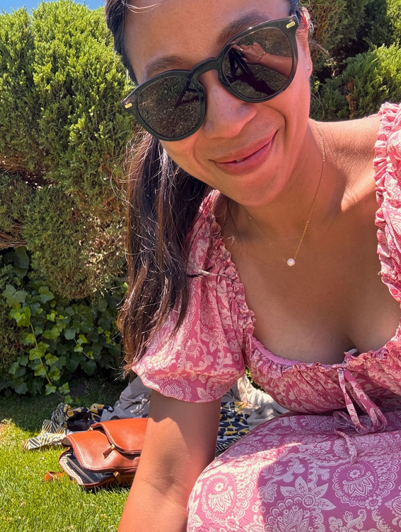

Space Junk
Nica Tanaka :: Dat Ngo
A digital archive that explores the relationship between personal experience and
the concept of panoptic oberservation using an artist's
EXTRA LARGE
personal collection of photographs.
Any
I hear enough

I hear enough

My Vision
Infinity
Focus Right
Obviously.
